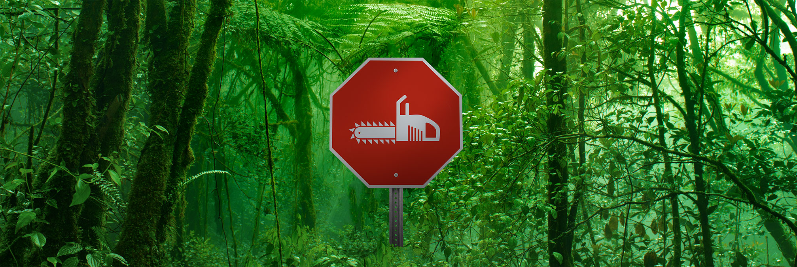
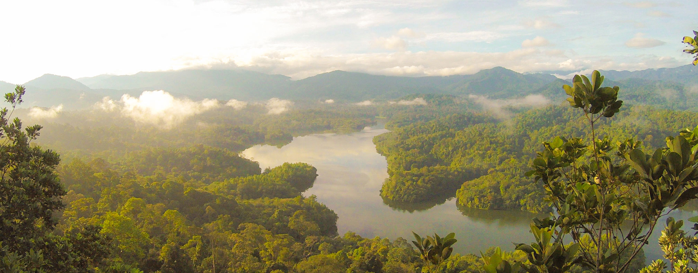

connect with a global movement - and help change our world.
Climate change is the biggest collective challenge we face in our lifetimes. Isn’t it time we worked together
not only to lessen its effects – but to actually stop it from happening? If that sounds like an ambitious goal,
well, it is. But we believe it’s the only way if we want to keep our planet healthy into the next century – and
long beyond.

let's work together
Partner with us
Together we can make a direct impact in better understanding, preserving, and protecting our natural
world.
Donate to Rainforest Connection
Every contribution increases our ability to help others monitor rainforests and wilderness areas using
our bio-acoustic technology.
donate

Ever wanted to hear a rainforest in real-time?
Download our free app to listen to the sounds of rainforests all over the world.
Immerse yourself in the tropical rains of Ecuador, the chatter of endangered wildlife in Costa Rica,
peaceful mornings in the jungles of Peru, and so much more


If you have other ideas on how to help – or if you have a project you’re looking for assistance on – feel
free to contact us, anytime, at
contact@rfcx.org
THANK YOU FOR SUPPORTING RAINFORESTS AND RFCx!
